MARSALA.
There is a certain elegance in colors that never demand attention. Warm yet restrained, Marsala possesses a quiet richness that feels especially at home in Giorgio Morandi's world, accentuating a subtle yet somehow unforgettable presence.
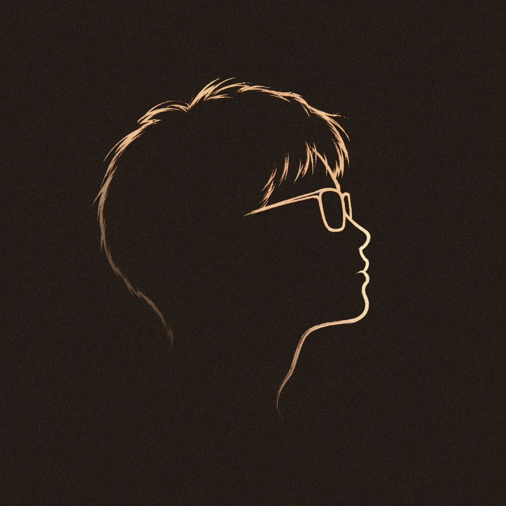
“What is there, however strange,
can be accepted without question;
familiarity will be what overwhelms us.”
—— Eudora Welty
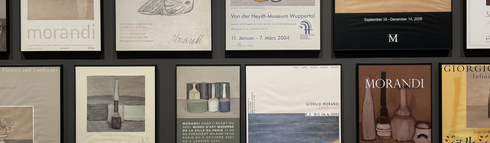
We keep giving our thoughts a shape. Strange how they sometimes end up saying something else.
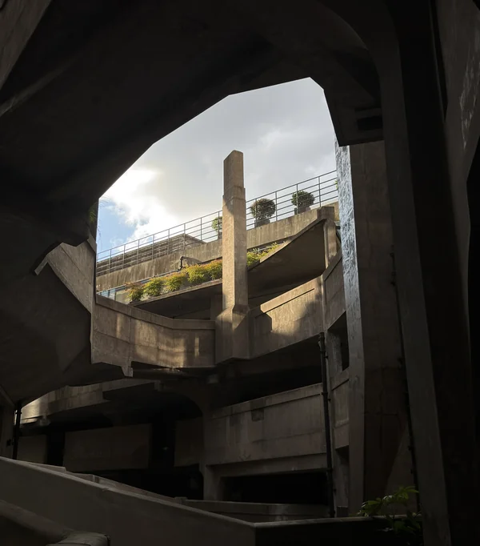
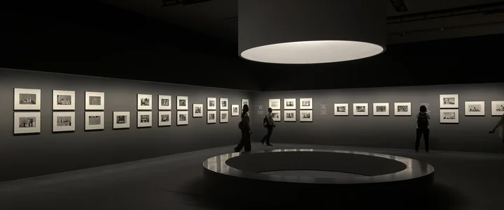
I've never been particularly fond of going out or socializing face to face. Fortunately, there are people who find other ways to communicate with the world — through architecture, art, and the things they create.
There's something comforting about that. I find a quiet sense of reassurance in these forms of expression, and in the possibility of understanding someone without ever having to meet them.
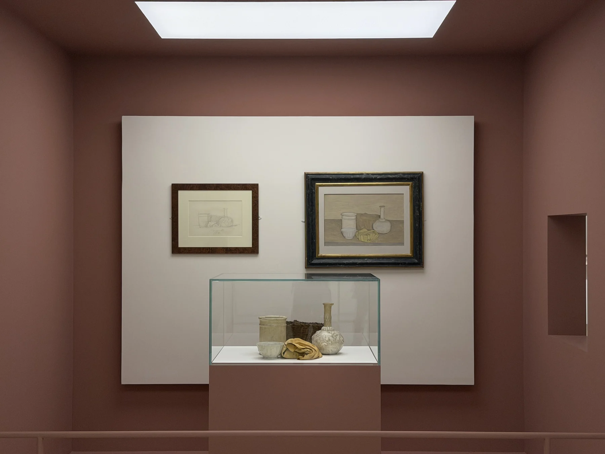
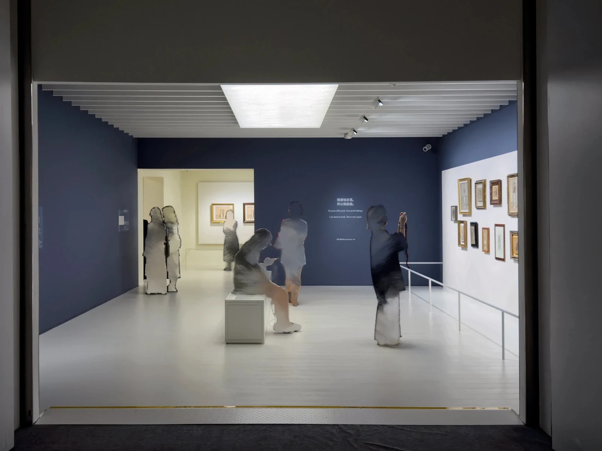
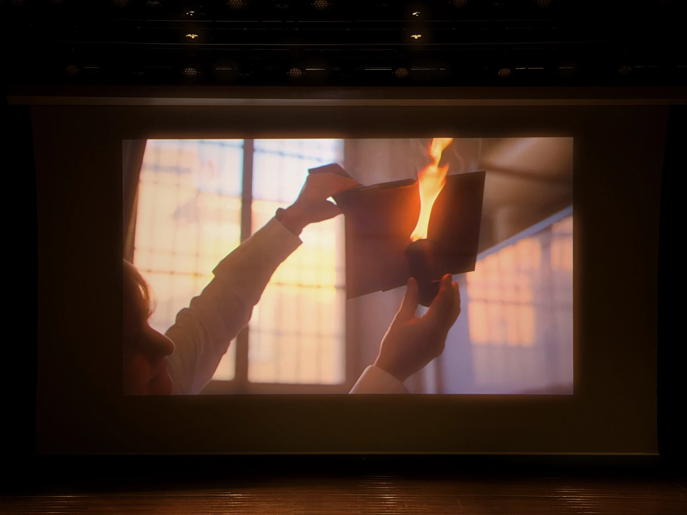
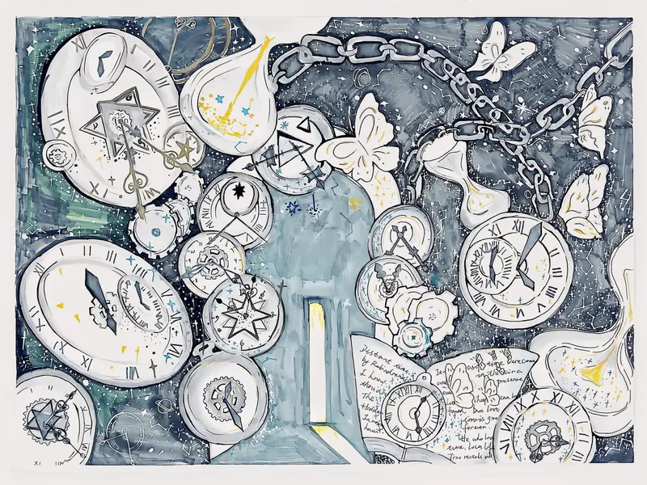
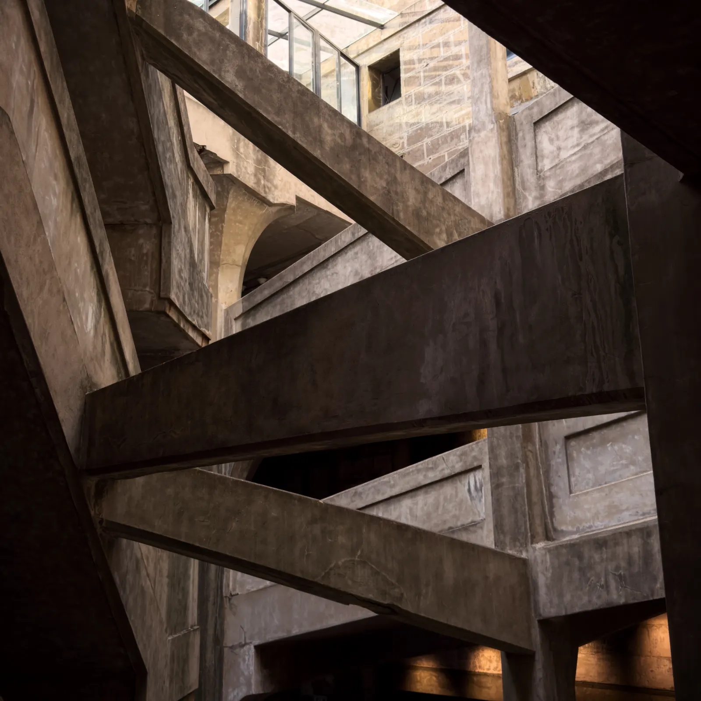
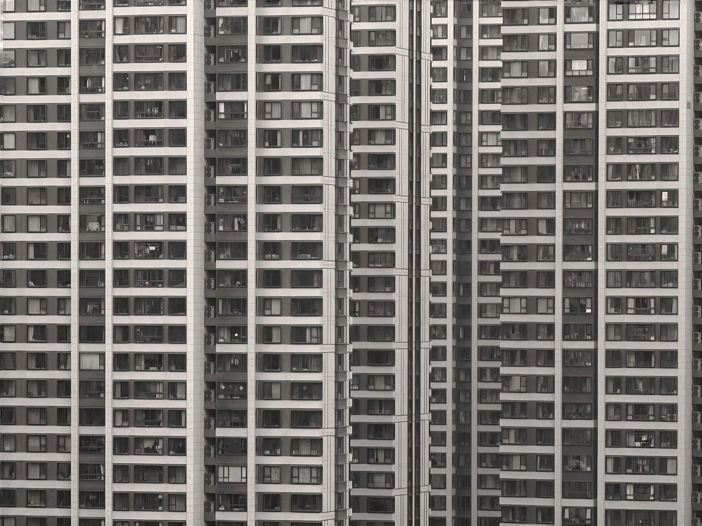
There is a certain elegance in colors that never demand attention. Warm yet restrained, Marsala possesses a quiet richness that feels especially at home in Giorgio Morandi's world, accentuating a subtle yet somehow unforgettable presence.
The world keeps changing the light, as if it hasn't quite decided what it wants to look like.
Light moves across the landscape, changing what comes forward and what slips away. The same place can hold a different photograph each time.
A few moments collected along the way: leaves against the sky, a distant horizon, a patch of colour that made me stop.
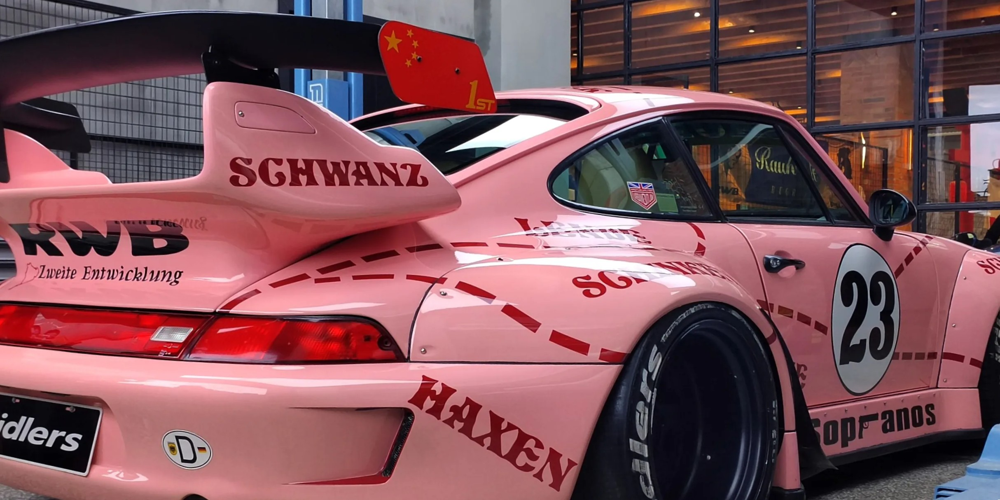
Everyone needs something to keep them grounded. Funny how mine usually have wheels.
Curves, joints, reflections. There is a rhythm to the things we build, even when they are standing still.
These photographs linger on the details of movement: a line drawn through metal, a wheel catching the light, the space around a machine at rest.